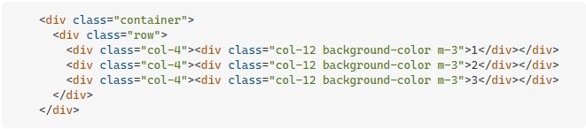

Jadi saya memiliki tiga kolom yang masing-masing lebarnya 4 kolom dan setiap kali saya
menambahkan m-3 (margin sekeliling) mereka putus karena itu, bagaimana saya bisa
menampungnya? Jadi mereka tetap semua 3 di baris yang sama?
Satu-satunya cara saya melihat sekeliling ini adalah dengan membuat sarang elemen lain.
Sistem kolom Bootstrap (seperti yang mungkin Anda ketahui) didasarkan pada gagasan bahwa halaman tersebut memiliki 12 kolom nosional. Anda kemudian menggunakan kelas col-* untuk menunjukkan berapa banyak dari 12 kolom yang digunakan setiap elemen. Jadi, dalam kasus ini, Anda telah mendeklarasikan bahwa setiap elemen membutuhkan 4 kolom, yang berarti mereka menggunakan 12 kolom nosional. Masalahnya adalah margin dalam HTML berada di luar elemen. Jadi, jika Anda memiliki tiga elemen, masing-masing menggunakan 4 kolom, dan kemudian menambahkan beberapa margin, Anda sekarang memiliki lebih dari lebar 12 kolom yang tersedia (di sini, 12 kolom ditambah tiga lot m-3). Akibatnya, elemen ketiga tidak memiliki cukup ruang untuk ditampilkan dan mengalir ke baris berikutnya. Untuk menghindari ini, Anda dapat menggunakan padding alih-alih margin (karena padding berada di dalam elemen, Anda mendapatkan pemisahan visual saat menempel pada lebar grid). Atau, Anda bisa mengurangi lebar elemen menjadi col-3 dan menambahkan margin Anda di luar itu. Namun, ini mungkin berarti (tergantung pada tata letak Anda) bahwa itu tidak menggunakan lebar penuh. Pada akhirnya, jika Anda membutuhkan tiga elemen di seluruh halaman dengan margin, mungkin lebih baik untuk menentukan kelas Anda sendiri daripada mencoba menggunakan kelas Bootstrap. Kerangka kerja sangat bagus saat Anda bekerja dengannya, dan menyebalkan saat Anda bekerja melawannya!
gunakan col alih-alih col-4